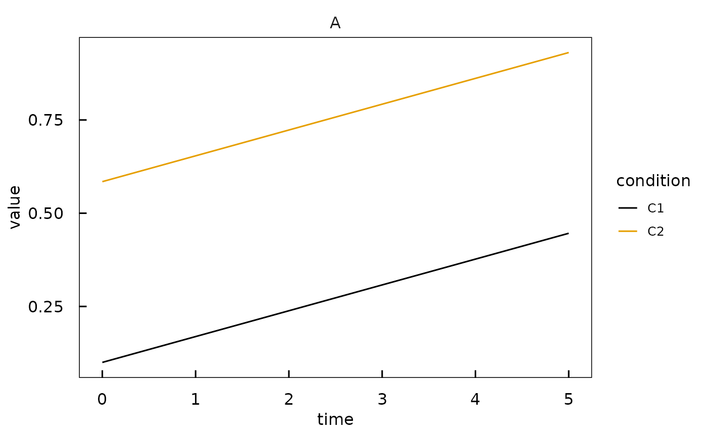
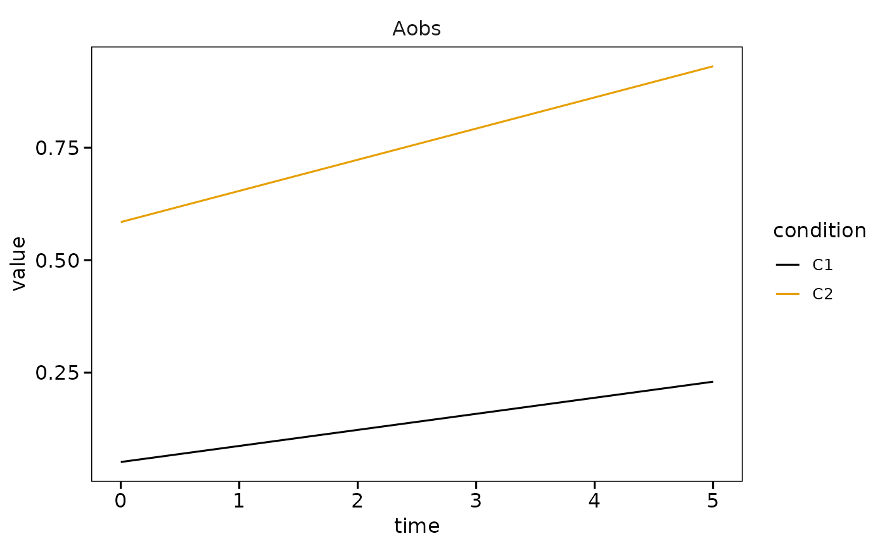

Builds an obsfn that evaluates observables, and their first and second
derivatives, on the output of a prediction function such as Xs().
Usage
Y(
g,
f = NULL,
states = NULL,
parameters = NULL,
condition = NULL,
attachInput = FALSE,
compile = FALSE,
modelname = NULL,
verbose = FALSE,
cores = NULL,
deriv = TRUE,
deriv2 = FALSE,
derivMode = "forward",
outdir = .dmodOutdir()
)Arguments
- g
Named character vector or eqnvec defining the observation function, or a list of those named by condition, which builds one observation function per condition in a single call. Expressions follow cppDE::expressions.
- f
Equations, anything
as.eqnvec()accepts, or a prediction function. The states and parameters are read offf; for a prediction function the forcings count as states.- states
Character vector of states, added to those read off
f.- parameters
Character vector of parameters, added to the symbols of
gandfthat are neither states nortime.- condition
NULLfor an observation function valid in every condition, or the name of the condition it belongs to.- attachInput
Logical, append the incoming states to the output. Default
FALSE; setTRUEto plot states alongside observables. Can be changed withcontrols().- compile
Logical.
TRUEcompiles the generated code now,FALSE(default) leaves it tocompile(). The function is evaluable only compiled.- modelname
Character, the base name of the generated C++ file and shared object. Default
NULL, which is"obsfn", followed by_<condition>.- verbose
Logical, print compiler output to the R console.
- cores
Number of parallel jobs used to generate and compile the sources when
gis a list, on Windows only to compile them;NULLauto-detects. Ignored for a single observation function, which is one source either way.- deriv
Logical. If
TRUE(default), build the first derivatives, returned asattr(, "deriv"),[time, observable, parameter], when the call hasderiv = TRUEandderivModecontains"forward".FALSEreturns none, whatever the call asks.- deriv2
Logical. If
TRUE, build the second derivatives, returned asattr(, "deriv2"),[time, observable, parameter, parameter], when the call hasderiv2 = TRUE; on a function built without them that call is an error. Requiresderiv = TRUE. DefaultFALSE.- derivMode
Which derivative code to build, any of
"forward"(default),"reverse"and"forward-reverse"."forward": the Jacobian; without it the function returns noderivattribute."reverse": needed forsweep = "reverse"."forward-reverse": needed forsweep = "reverse"withderiv2 = TRUE.
- outdir
Character. Directory for the generated C++ source and the shared object, default
getOption("dMod2.outdir"), else the working directory.
Value
An obsfn, called as g(out, pars, ...) with a prdlist out, see
section Calling a dMod function, or composed as g * x. It returns a
prdlist of the observables and their derivatives.
Calling a dMod function
The leading arguments depend on the class and are matched by position or by name:
prediction function:
x(times, pars, ...), returning a prdlist;observation function:
g(out, pars, ...)with a prdlistout, returning a prdlist;parameter transformation:
p(pars, ...), returning a list with one parvec per condition;objective function:
obj(pars, ...), returning an objlist.
pars is a named numeric vector. If it has a deriv attribute, as the
output of a parameter transformation does, the derivatives are taken with
respect to the parameters behind it. A composition is called according to
the resulting class:
g * x * p is a prediction function, (g * x * p)(times, pars).
The other arguments are named:
fixed: named numeric vector of parameters that enter the evaluation without derivatives. DefaultNULL.deriv:TRUE(default) returns first derivatives with respect topars.deriv2:TRUEreturns second derivatives as well. DefaultFALSE. Every function of the chain has to be built for them, see the argumentsderiv2andderivModeofodemodel(),Y()andP().hessian: objective functions only, see the table below. DefaultNULL.sweep: objective functions only."forward"(default) propagates the sensitivities through the chain;"reverse"computes the gradient in one backward pass, whose cost does not grow with the number of parameters."reverse"needs every function of the chain built withderivMode = "reverse", and with"forward-reverse"forderiv2 = TRUE.conditions: character vector, the conditions to evaluate. Default all conditions of the function.env: environment for intermediate results. DefaultNULL, a new one. An objective function stores the prediction there aspredictionand returns the environment as attributeenv.cores: number of threads for the ODE solves and the residual kernel. DefaultgetOption("dMod2.cores", 1L).
Prediction, observation and parameter functions accept hessian and
sweep and ignore them. With deriv = TRUE an objective function returns
this Hessian:
sweep | hessian | deriv2 = FALSE | deriv2 = TRUE |
"forward" | NULL, TRUE | Gauss-Newton | exact |
"forward" | FALSE | none | none, with a warning |
"reverse" | NULL | none | exact |
"reverse" | TRUE | none, with a warning | exact |
"reverse" | FALSE | none | none, with a warning |
hessian = "sparse" returns the Gauss-Newton Hessian of the forward sweep
as a sparse Matrix, assembled from the blocks of the conditions; trust()
factorizes it where the argument sparse takes the sparse path, and vcov()
solves it for the columns of which.
With deriv = FALSE it returns the value alone.
Examples
## A prediction function interpolating parameter values piecewise linearly
times <- 0:5
grid <- data.frame(name = "A", time = times, row.names = paste0("p", times))
x <- Xd(grid)
## An observation function
g <- Y(c(Aobs = "s*A"), states = "A", parameters = "s",
modelname = "prediction_obs", outdir = tempdir())
## One parameter transformation per condition
innerpars <- c(getParameters(x), getParameters(g))
trafo <- setNames(innerpars, innerpars)
p <- P(list(C1 = replaceSymbols(innerpars, paste0(innerpars, "_C1"), trafo),
C2 = replaceSymbols(innerpars, paste0(innerpars, "_C2"), trafo)),
modelname = "prediction_p", outdir = tempdir())
# \donttest{
## Compile the observation function and the transformations together
compile(g, p, output = "prediction_ex")
#> using C++ compiler: g++ [-O2 -DNDEBUG -w -fPIC]
outerpars <- getParameters(p)
pars <- setNames(seq(0.1, 1, length.out = length(outerpars)), outerpars)
## Unobserved states, then observables
plot((x * p)(times, pars))

plot((g * x * p)(times, pars))

# }